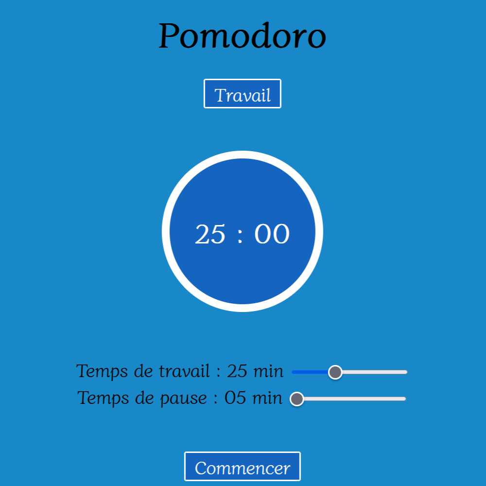
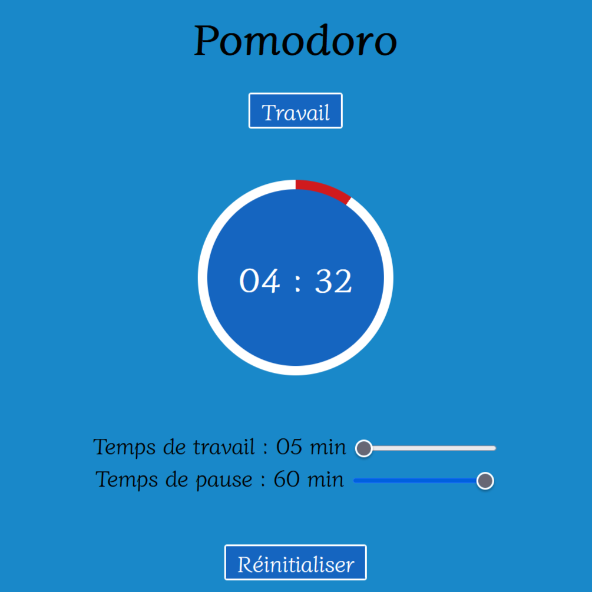

Pomodoro
Date : 2023
Présentation
J'ai réalisé un pomodoro permettant de gérer votre temps de travail et de pause, afin de travailler plus efficacement.
Liens vers le projet
Cela a permis de m'améliorer
- Création d'une première page responsive : l'application est accessible à un plus grand public ;
- Rédaction précise d'un README : décrire son projet de manière précise ;
- Utilisation du local storage : ne pas avoir à redéfinir les différents temps ;
- Mise en place d'une animation : mesurer la progression du temps de manière visuelle.
Aperçu

